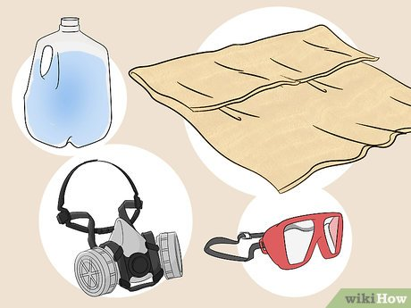
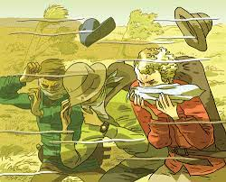
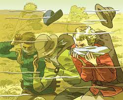
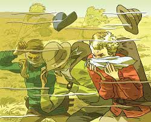

Understanding Sandstorms: Introduction, Symptoms, and Preventive Measures

Introduction to Sandstorms
What are Sandstorms? Sandstorms are severe weather events characterized by strong winds lifting and carrying large amounts of sand and dust over long distances. They are common in arid and semi-arid regions and can lead to low visibility and respiratory problems.
Symptoms of an Approaching Sandstorm
Identifying signs of a sandstorm can help you prepare and protect yourself:
- Increasing Wind Speed: Sudden increases in wind speed can indicate an approaching sandstorm.
- Dust and Sand Visibility: Noticeable dust or sand particles in the air, even before the storm fully arrives.
- Changes in Weather Conditions: Overcast skies and a noticeable decrease in temperature can precede a sandstorm.
- Alerts and Warnings: Local authorities or weather services may issue warnings ahead of a sandstorm.
Preventive Measures During a Sandstorm
To minimize the impact of a sandstorm, follow these preventive measures:
- Seek Shelter
- Protect Your Respiratory System
- Keep Indoor Air Clean
- Stay Informed
- Prepare an Emergency Kit li>

 

